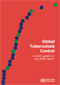
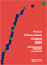

Research
Publications
Expansion of social protection is necessary towards zero
catastrophic costs due to TB: the first national TB patient cost survey
in the Philippines Jhiedon L. Florentino, Anna Marie Celine
Garfin, Rosa Mia L. Arao, Donna Mae G. Gaviola, Carlos R. Tan, Rajendra
Prasad Yadav, Tom Hiatt, Fukushi Morishita, Andrew Siroka, Takuya
Yamanaka, Nobuyuki Nishikiori
DOI: 10.1371/journal.pone.0264689
Scoring tools to identify TB patients facing catastrophic
costs in the Philippines Takuya Yamanaka, Anna Marie Celina
Garfin, Rosa Mia Arao, Fukushi Morishita, Tom Hiatt, Nobuyuki
Nishikiori, Rajendra Prasad Yadav
DOI: 10.5588/pha.23.0014
Epidemiology and control of tuberculosis in the Western Pacific Region: update with 2013 case notification data Hiatt, T. and Nishikiori, N. Western Pacific surveillance and response journal : WPSAR 2016 | journal-article DOI: 10.5365/WPSAR.2015.6.4.010
Outcomes of Category I and II regimens in mono-and
polyresistant tuberculosis cases in the Philippines Lew, W.-J.
Harrington, K. Garfin, C. Islam, T. Hiatt, T. Nishikiori, N.
International Journal of Tuberculosis and Lung Disease 2016 |
journal-article DOI: 10.5588/ijtld.15.0292
Drug-resistant tuberculosis in the WHO Western Pacific
Region Islam, T. Hiatt, T. Hennig, C. Nishikiori, N.
Western Pacific surveillance and response journal : WPSAR 2014 |
journal-article DOI: 10.5365/WPSAR.2014.5.4.007
Epidemiology and control of tuberculosis in the Western
Pacific Region: analysis of 2012 case notification data Hiatt,
T. Nishikiori, N.
Western Pacific surveillance and response journal : WPSAR 2014 |
journal-article DOI: 10.5365/WPSAR.2014.5.1.013
Market size and sales pattern of tuberculosis drugs in the
Philippines Islam, T and van Weezenbeek, C and Vianzon, R and
Garfin, AMCG and Hiatt, T and Lew, WJ and Tisocki, K
Public health action 2013 | journal-article
Monitoring and Evaluation
Global tuberculosis report 2013
Geneva, Switzerland: World Health Organization
2013

Global tuberculosis report 2012
Geneva, Switzerland: World Health Organization
2012
Global Tuberculosis Control 2011
World Health Organization: Geneva
2011
Global tuberculosis control 2010
World Health Organization: Geneva, Switzerland
2010

Global tuberculosis control 2009
a short update to the 2009 report
World Health Organization: Geneva, Switzerland
2009

Global tuberculosis control 2009
epidemiology, strategy, financing. WHO report 2009 WHO Press
2009
Master’s Thesis
Neighbourhood-level risk factors and social determinants for tuberculosis disease in Metro Manila, Philippines: an ecological study using census and notification data